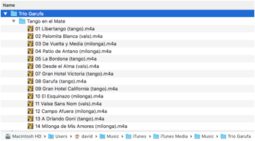
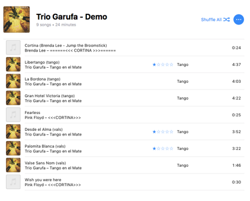
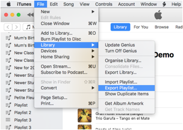
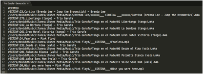
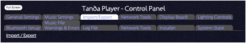
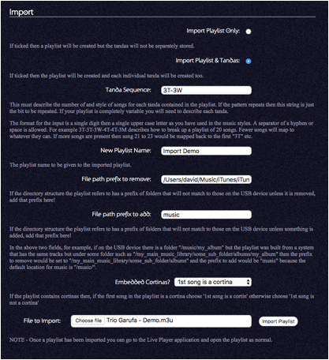
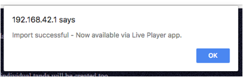
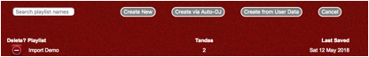
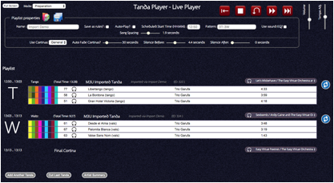
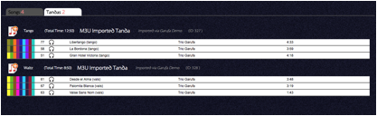

The Tanda Player has some basic support for importing playlists created using other applications. You can import it as a playlist only or if the playlist was structured as tandas you can import the tandas too making them available for use in new playlists.
Your main music library probably has just one top-level folder under which you have added all your music. When you copied some of your music to the USB device for the Tanda Player you probably copied them from the same location. The only difference therefore between a track on the USB device and the original location will be the path prefix. If you know the path to the originals and how it maps to the Tanda Player’s USB version, you can import the playlist.
For example, here are the steps to take a playlist from iTunes and import it into Tanda Player.
For this example just six songs will be assembled into a playlist, 3 Tango and 3 Waltz with no cortinas. The same album is also on the USB device.
My music library is located at this location:
The album is just below that location as shown:

I created a playlist in iTunes of the six songs and put in some cortinas

Next I exported the playlist in M3U format

Viewing the playlist in a text editor I can see the following text

Note that some applications do not output the M3U tags and instead just produce a list of filenames; this will work too!
Now open up the Tanda Player’s control panel application and go to the Import/Export tab.

Because the playlist consisted of tandas of 3 tango and 3 waltz I can specify this pattern when I import it – “3T-3W”. Similarly because I have included cortinas in the playlist I can specify that in this case the first song is a Cortina and the import process will strip these out. (Tanda Player Playlists do not store the cortinas! Instead you add the cortinas you want when you play the playlist!)
I also need to specify the prefix path to be removed which is the bit in my library that matches to the “music” folder on the USB device.
/Users/david/Music/iTunes/iTunes Media/Music
Do not include a trailing slash and remember that the case of the letters is important!
Once all information has been set, simply click the import button.

If all goes well you will see a simple confirmation:

Now I can go and use the playlist or any of the tandas.
In the live player, you can open up the playlist selection dialogue and pick your imported playlist.

Then you can see the playlist complete with the substituted cortinas!

As you can see above, the tango and waltz tandas have been tagged as such (The big T and W on the left).
Also if you search in the Tanda Builder app for your playlist name or part of it (in my case “demo”) you can see the tandas. These can now be renamed or adjusted etc. as for any other tanda.
